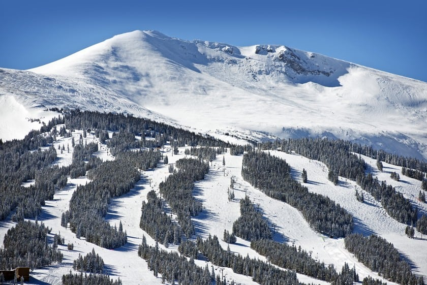
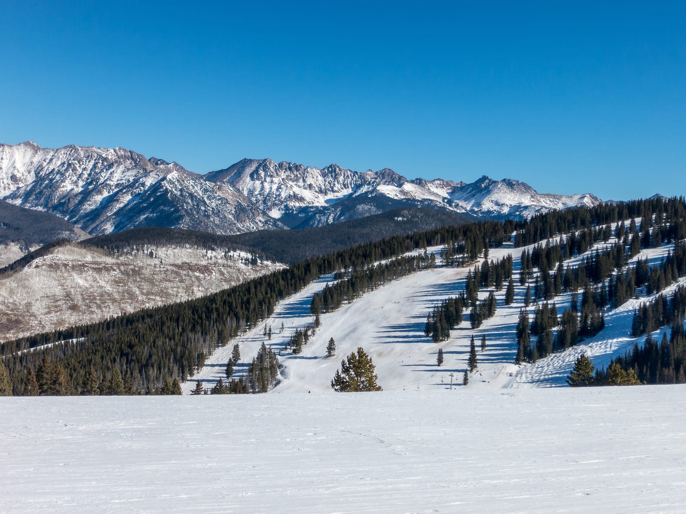
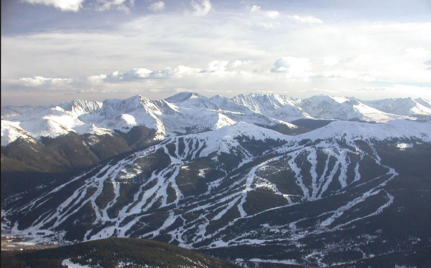
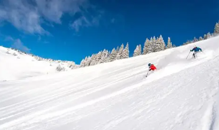

Welcome to Colorado Ski Resorts for Adventure Seekers
Discover some of the best and most popular ski destinations in Colorado!
Get StartedFeatures
Breckenridge
This breathtaking resort offers world-class skiing and stunning mountain views.

Vail
This world-renowned resort features exceptional terrain and a vibrant alpine village.

Copper Mountain
This family-friendly resort offers diverse terrain and a charming mountain town.

Featured Resort: Vail
Vail is one of the largest ski resorts in the United States, known for its wide open Back Bowls, long groomed runs, and a pedestrian-friendly village at the base. Advanced skiers can chase powder in the bowls, while beginners and intermediates have plenty of gentle terrain to build confidence. If you only have time to visit one resort this season, Vail offers a bit of everything.

When to Go
Colorado's ski season typically runs from November through April. Early winter offers smaller crowds, while February and March bring deep snowpack and the most reliable conditions. Holiday weeks and weekends are the busiest, so plan ahead if you want shorter lift lines.
Planning Your Trip
Most travelers fly into Denver International Airport and drive west on I-70 to reach resorts like Breckenridge, Vail, and Copper Mountain. Winter traffic and mountain weather can slow the trip, so leave extra time and check road conditions before you go.
Heard enough?
The powder is waiting. Pick your resort, book your lift tickets, and get ready for a season of Colorado adventure.
Plan Your Trip